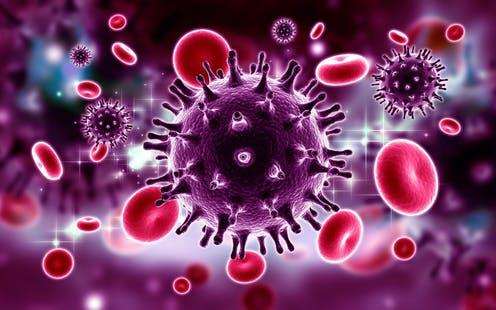
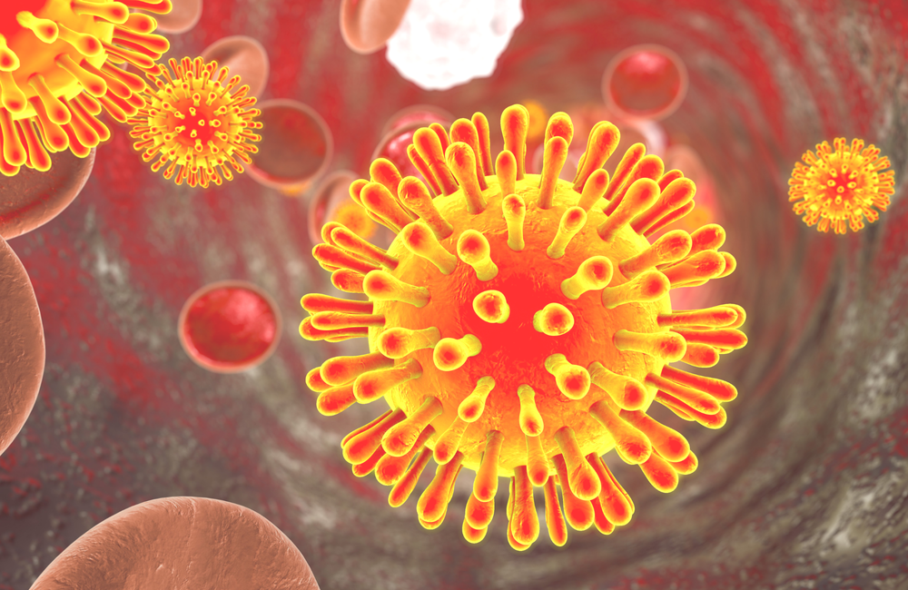
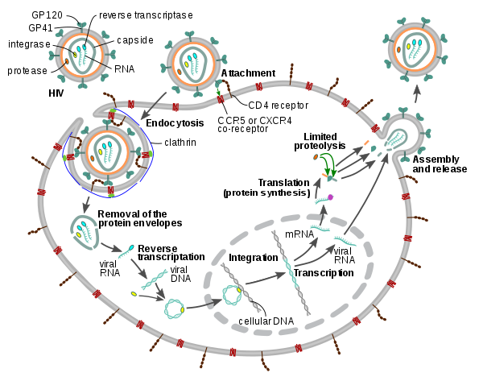

Human immunodeficiency virus
Human Immunodeficiency Virus (HIV) is a member of the Lentivirus genus (a subgroup of retrovirus that infect humans) of the Retroviridae family. Its final stage is Acquired ImmunoDeficiency Syndrome (AIDS), a progressive failure of the immune system. HIV-1 is a capsuled retrovirus ; each virion is composed of a capsid containing two strands of RNA, 15 types of viral proteins, and a few proteins from the last host cell it infected, surrounded by an envelope and an associated matrix of lipid bilayer membrane. HIV invades host cells and hijack their internal machineries.
The HIV genome consists of 9 genes which encode for 15 proteins (three structural proteins, two envelope proteins, three enzymes, and six accessory proteins). Each protein serves a role directly related to the virus’s life cycle.
Viral proteins
- Structural Proteins:
- Envelope proteins gp120 and gp41 are involved in the binding of the virus to receptors on the surface of cells. The spikes formed by these proteins (carbohydrates) prevents their recognition by antibodies.
- Matrix protein forms a coat on the inner surface of the viral membrane.
- Capsid protein forms a cone-shaped coat around the viral RNA, delivering it into the cell during infection.
- Nucleocapsid protein protects the viral RNA by forming a stable complex with it.
- Enzymes:
- Reverse transcriptase produces DNAc (complementary) from a copy of the viral RNA genome and then destroys the RNA to build the second strand of DNA, which is used to build new viruses.
- Integrase inserts the viral DNA into the infected cellular genome; enabling the HIV to lie dormant in cells for decades.
- HIV protease is crucial for the maturation of HIV since it cleaves the long polyproteins into proper functional pieces.
- Accessory Proteins:
- Viral Protein u
- Viral infectivity factor
- Viral protein r
- P6
- Negative regulatory factor (Nef)
- Regulator of viron
- Trans-activator of transcription

Viral Cycle
HIV uses a complex series of protein-protein interactions to deliver its genome into the host cell cytoplasm while simultaneously evading the host immune response. Figure 31 The HIV first bind to receptors on the cell surface which triggers fusion of the viral and host cell membranes, integration of viral DNA into the cell genome and production of new immature virus.
HIV entry is the first phase of the viral replication cycle. It involves the adhesion of virus to the host cell and ends with the fusion of the cell and viral membranes. The viral capsid is then delivered into the cell cytoplasm. The entry of HIV in the host cell begins with the binding of HIV coat proteins (gp41 and gp120) to glycoproteins receptors on the cell surface, more specifically macrophages and CD4 T cells. The HIV attachment to the host cell is a fundamental step in its replication cycle. Then, the HIV releases viral material into the cell by fusing with the cell membrane and entering it. All CD4-positive cells such as T helper cells, macrophages, dendritic cells and astrocytes are susceptible to HIV. This step involves a direct contact between the trimeric envelope glycoproteins complex and two receptors on the cell surface (CD4 and chemokine). Then the HIV coat protein (gp120) activate LFA-1 by binding to α4β7 integrin. The binding of gp120 of the HIV and CD4 proteins of the cell induces a structural change in the envelope complex which improves the interaction between gp120 and the chemokine receptor . Therefore, N-terminal fusion peptide gp41 can now enter the cell since the attachment has been stabilized by second branch. Finally, the fusion of HIV-1 and cell membrane occurs when the extracellular portion of gp41 collapse into a hairpin which brings together the virus and the cell membrane. This collapse is due to the interaction of the two repeats sequences (HR1 and HR2) in gp41.

After the HIV’s fusion with the cell membrane, the capsid is taken by an endosome. The variation of the pH level causes the release of the viral RNA as well as several crucial viral enzymes such as integrase, reverse transcriptase, ribonuclease and protease into the cytoplasm cell. HIV RT transcribes the single-strand HIV RNA genome into cDNA while the RNA strand is degraded enzymatically by RNase. The single-stranded cDNA is then converted into double-stranded DNA (proviral DNA) by the DNA-dependent DNA polymerase activity of RT. Then, nucleopores transport the proviral DNA into the cell nucleus in the form of a complex (integrase & proviral DNA). Thus, the viral core will have undergone a transformation from a ribonucleoprotein (RNP) complex into a reverse transcription complex (RTC) and then into a preintegration complex (PIC). Integrase will then insert at random the proviral genome into the human host cell genome. Integration of the proviral DNA finalizes the HIV infection of the cell and the establishment of a persistent infection.  The initial RNP complex or ‘nucleocapsid’ is thought to be coated with more than 2000 molecules of NCp7 enclosed in a conical capsid structure composed of Capsid proteins 4. The NCp7 molecules may be progressively released from the RTC during the synthesis of the viral DNA. This hypothesis is based on the lower affinity of NCp7 for double stranded DNA as compared to the single stranded genomic RNA.
The proviral genome can be replicated as part of the host cell genome during cell division which induces its rare latent infection. However, after activation of infected cells the LTR promotor of the proviral genome will act as an attachment site for cellular DNA-dependent RNA polymerases as well as a variety of transcription factors which will initiate the synthesis of viral mRNA and genomic RNA.
Novel Drugs
The first drug to treat HIV, was approved in 1987, and it targeted the viral reverse transcriptase. However, the current drugs (targeting HIV-1 protease and reverse transcriptase) used presents major problems such as numerous side effects triggered by polytherapy, natural resistance of some patients to them and most importantly the ability of HIV-1 to generate mutants resistant which can replicate as effectively as wild-type. Indeed, the viral RT has no proofreading activity, statistically one incorrect nucleotide per transcription round is incorporated into the proviral DNA. If HIV replication is unrestricted a daily turnover of 108-109 viral particles is expected, i.e. newly produced by infected cells and destroyed by the immune system. Assuming a mutation rate of 1 in 104 nucleotides per genome during one replication cycle, a broad spectrum of various subspecies can therefore develop in a patient in the course of time.

Therefore, it is crucial to develop new antiviral agents that can overcome this critical problem of acquired resistance. One plausible solution would be to target vital viral proteins. NCp7 hold promising pharmaceutical potential since it plays a critical role at different steps of the retrovirus life cycle and any modification of this structure leads to a complete loss of HIV-1 infectivity.
It has been demonstrated that G-quadruplexes formed in the virus RNA genome affect the progression of reverse transcriptase in vitro which can lead to an inhibition of transcription, but not in infected cells. Indeed, Nucleocapsid protein NCp7 remains connected to the viral RNA during reverse transcription and binds and unfolds the RNA G-quadruplexes, allowing reverse transcription to proceed. It can also recognize DNA G4s, particularly intermolecular G4 and induce surface-attached oligonucleotides to fold into tetramolecular G4. The G-quadruplex ligand BRACO-19 was able to partially counteract this effect by stabilizing G4 and inhibiting the production of viral cDNA.